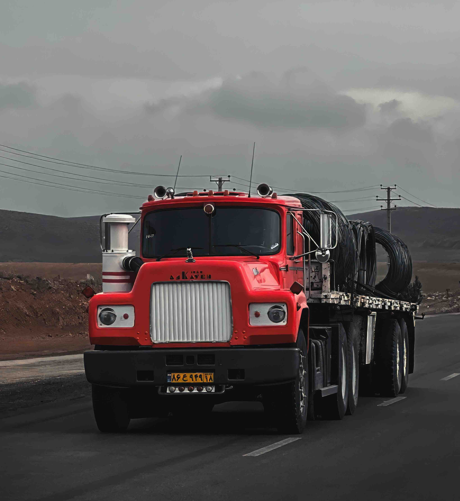

Empleados
130+
Equipo distribuido entre Los Ángeles y Zaragoza.
Logística inteligente para e-commerce
TrackFlow conecta inventario, transporte y devoluciones para que las marcas escalen sin fricción. Operamos en Estados Unidos y España con una propuesta centrada en velocidad, trazabilidad y automatización.

Forma parte de la unidad que está modernizando una operación logística internacional. Crea soluciones reales con impacto en miles de envíos.
Datos clave extraídos del contexto operativo actual de la empresa.
Empleados
130+
Equipo distribuido entre Los Ángeles y Zaragoza.
Facturación anual
EUR 9M
Escala actual del negocio logístico.
Transportistas
8
Red multimercado para envíos de última milla.
Devoluciones
18-25%
Rango de devolución según cliente y país.
Proceso operativo simplificado de extremo a extremo.
El pedido se recibe, valida y enruta al almacén correcto.
Se prepara el SKU y se empaqueta según los requisitos de la marca.
Se selecciona el carrier más adecuado por destino, coste y urgencia.
El envío se monitoriza hasta la entrega final al cliente.
Si aplica, se procesa la logística inversa para cerrar el ciclo.